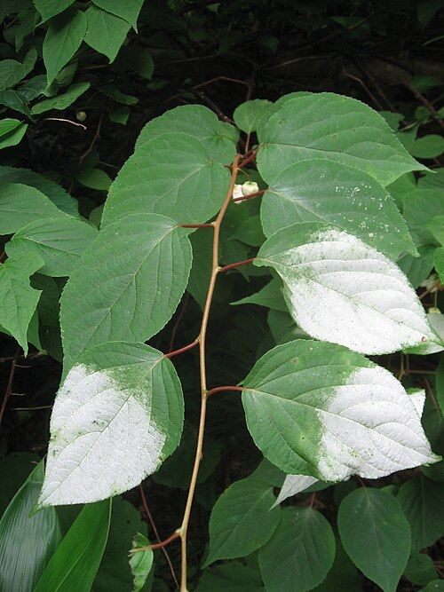
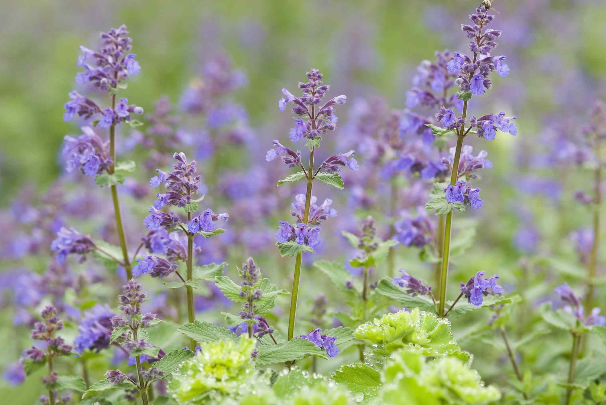
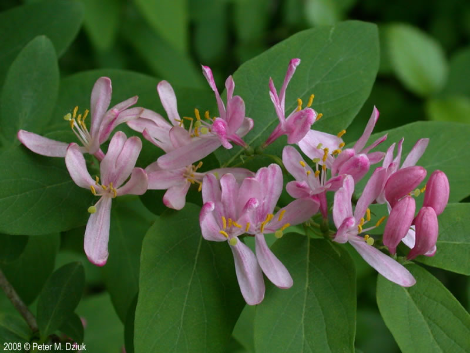
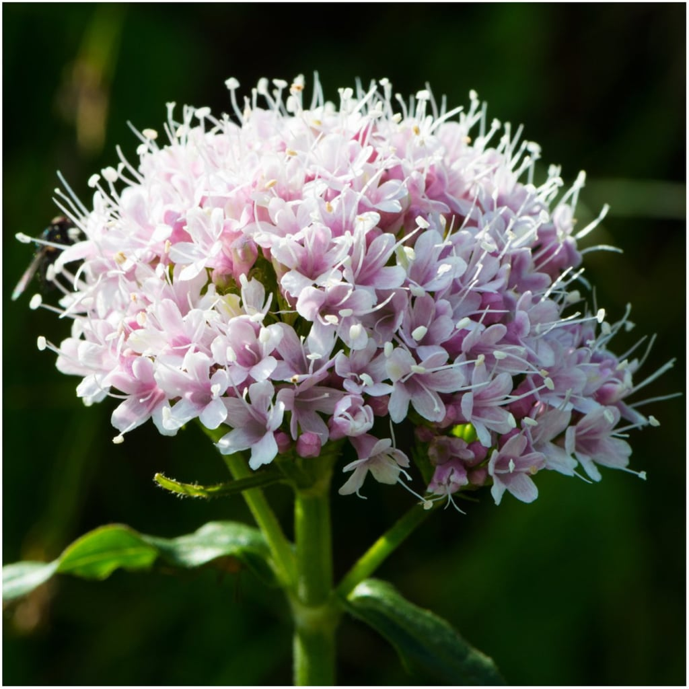

Catnip Alternatives
So maybe your cat isn't affected by catnip, or your cat's behavior on catnip is outrageous, what else can you give them? The alternatives down below will give your cats similar effects to catnip
Please please please check with a vet about reccommendations, tips, and potential side effects before giving these alternatives to your cat
Silvervine

- Scientific Name: Actindidia polygama
- Not addictive to cats
- Can be used for insect repellent
Catmint

- Scientific Name: Nepeta
- Same genus as catnip, NOT the same thing
- 50 different kinds of catmint
- Easy to grow
Tatarian Honeysuckle

- Scientific Name: Lonicera tatarica
- Don't randomly pluck honeysuckle out in wild to give to your cats - some honeysuckle types are TOXIC
Valerian

- Scientific Name: Valeriana officinalis
- Cats are effcted by both smells and consumption
- Can act as a sedative
- DON'T use human-grade valerian powder because it could have other ingrediants that are unsafe for your cat